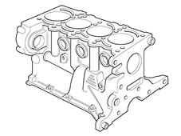

INTRODUCTION - ENGINE CRANKCASE
- Path
- Descriptions > 10 ENGINE > 1012 ENGINE CRANKCASE > INTRODUCTION - ENGINE CRANKCASE
- Kind
- system description
- Applies to
- engines: 1.4 8v; all production periods
- Interactive page
- https://sloeber94.github.io/elrnDB-fDbl/en/#/223000202
Applies to: engines: 1.4 8v; all production periods
CONSTRUCTION SPECIFICATIONS
The crankcase is made of of high mechanical strength cast iron.
The crankshaft is supported by five main bearings.
The cylinders are formed directly in the crankcase and sorted into three size categories plus one oversize.
Special channels in the crankcase walls carry coolant and lubrication fluid.
